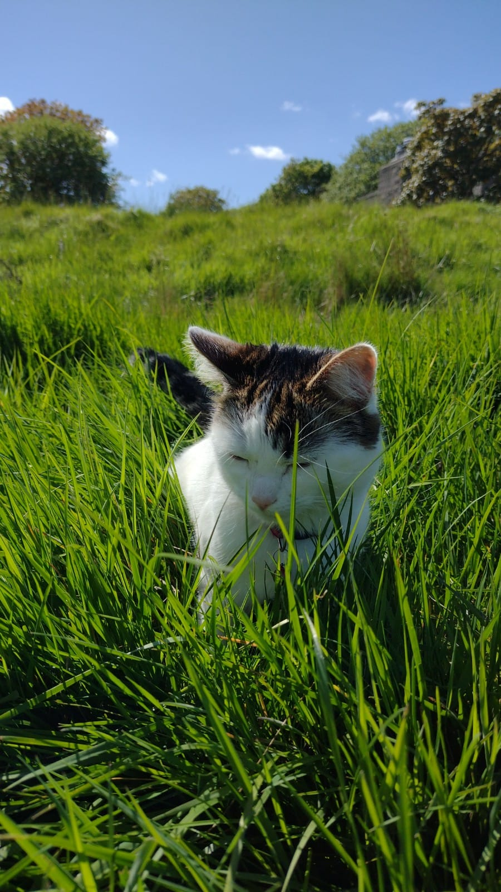
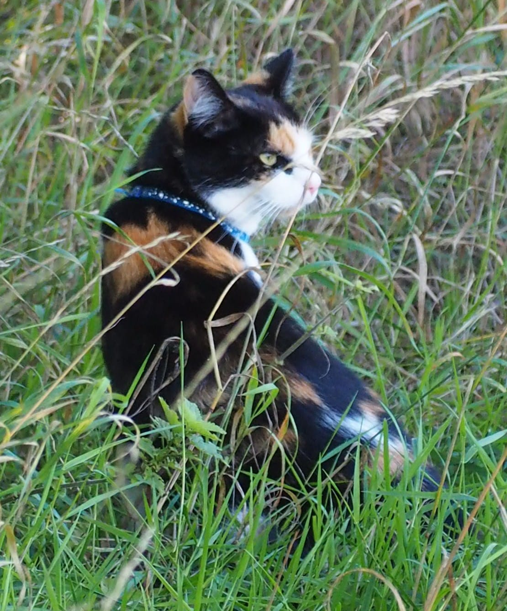

Our story:
Our story:
Our story:
 Małysz and I work together in beautiful Corunna Moor to create some of the
world's highly awarded mice meals.
Małysz and I work together in beautiful Corunna Moor to create some of the
world's highly awarded mice meals.
 We grew up on this fantastic piece of wasteland learning to combine sustainable and local ingredients and to develop hunting techniques.
Our goal is to use only natural, organic, fresh ingredients, without the usual artificial preservatives and additives to create a luxurious mouse sashimi.
We source sustainable mice, shrews and voles from the local moor and the neighbouring woodland.
We meticulously combine this with fresh butterflies and grasshoppers from local swarms to create flavours and textures to delight the palate.
I hope you’ll enjoy tasting them as much as we enjoy hunting them!
 In the next cartoon you will have a rare opportunity to watch Małysz's hunting techniques. Narrated by Sir David Attenborough.